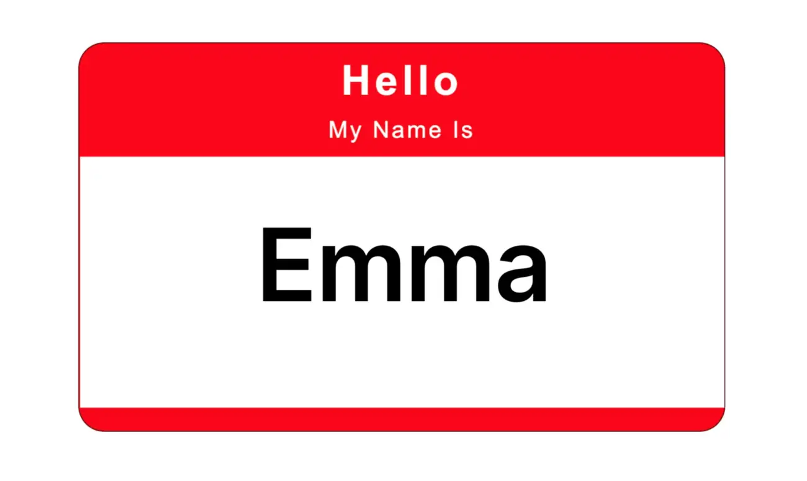
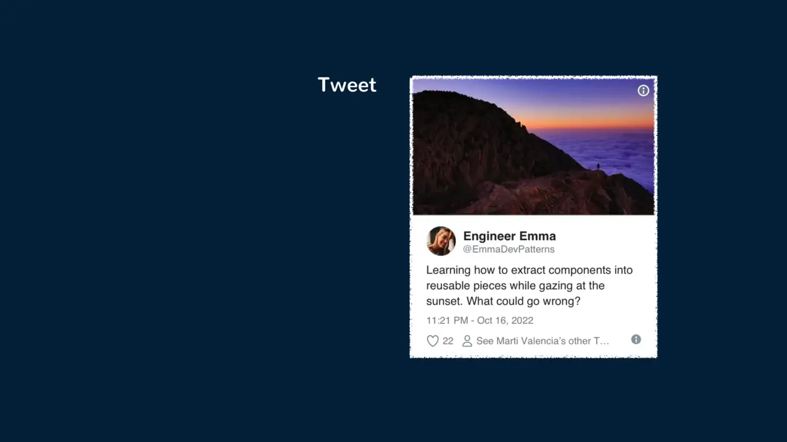
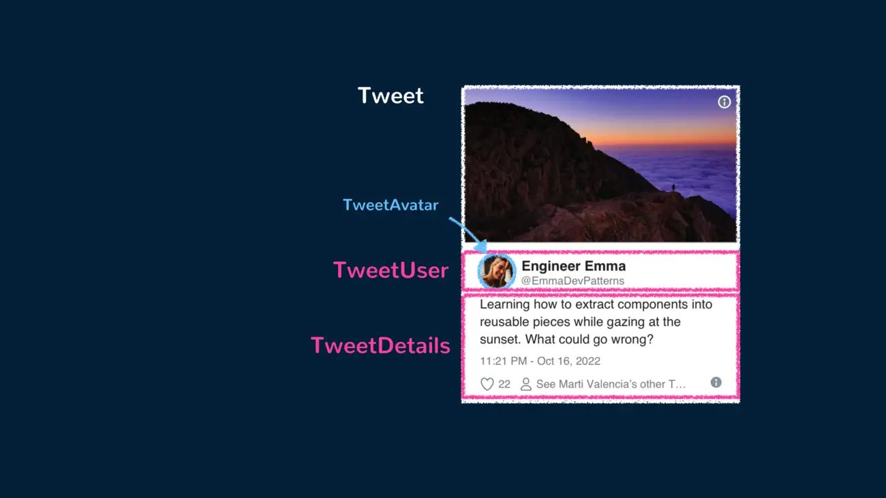
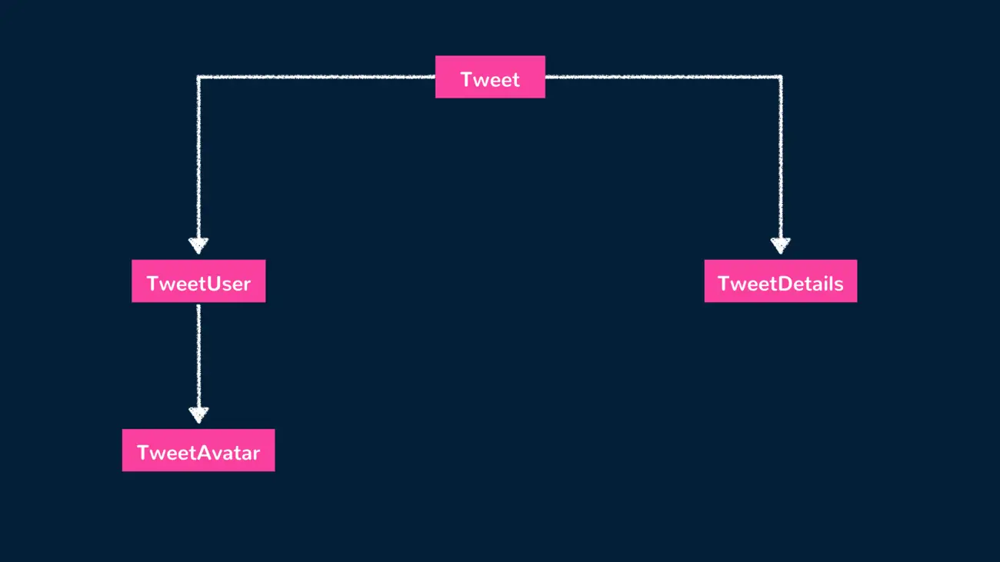

أنماط Vue
المكوّنات
مكوّنات Vue هي لبنات البناء الأساسية لتطبيقات Vue، إذ تتيح لنا دمج الترميز (HTML) والمنطق (JS) والأنماط (CSS) داخلها.
وحين نعمل داخل تطبيق Vue، من المهمّ أن نفهم أن كل عنصر تقريبًا يُعرض في واجهة المستخدم يكون غالبًا جزءًا من مكوّن Vue. والسبب في ذلك أن تطبيق Vue غالبًا ما يتكوّن من مكوّنات متداخلة داخل مكوّنات أخرى، مما يُشكّل بنية هرمية.
قابلية إعادة الاستخدام وقابلية الصيانة هما من أبرز الأسباب التي تجعل بناء تطبيق بمكوّنات ذات بنية جيدة أمرًا مهمًا بشكل خاص.
ولفهم المكوّنات فهمًا أفضل، سنقوم بإنشاء أحدها. وأبسط طريقة لإنشاء مكوّن Vue في تطبيق لا يحتوي على عملية بناء (build process) (مثل Webpack) هي إنشاء كائن JavaScript عادي يحتوي على خيارات خاصة بـ Vue.
export default {
props: ["name"],
template: `<h1>Hello, my name is {{ name }}</h1>`,
};
يحتوي المكوّن على خاصية props معرّفة، وهي تقبل خاصية واحدة اسمها name. والخصائص (props) هي وسيلة لتمرير البيانات إلى مكوّن من مكوّنه الأصل.
أما خاصية template فتعرّف قالب HTML الخاص بالمكوّن. وفي حالتنا هذه، تحتوي على وسم عنوان `` يعرض النص "Hello, my name is" تليه قيمة الخاصية name، يتم تصييرها باستخدام صيغة الأقواس المعقوفة المزدوجة في Vue وهي {{ }}.
إلى جانب تعريف المكوّنات ككائنات JavaScript عادية، فإن الطريقة الأكثر شيوعًا لإنشاء المكوّنات في Vue هي استخدام المكوّنات أحادية الملف (SFCs). والمكوّنات أحادية الملف هي مكوّنات تتيح لنا تعريف HTML وCSS وJS الخاص بالمكوّن كلٍّ منها داخل ملف .vue خاص، كما هو موضح أدناه:
<template>
<h1>Hello, my name is {{ name }}</h1>
</template>
<script setup>
const { name } = defineProps(["name"]);
</script>
ملاحظة: المكوّنات أحادية الملف في Vue ممكنة بفضل أدوات البناء مثل Vite. فهذه الأدوات تساعد على ترجمة مكوّنات
.vueإلى وحدات JavaScript عادية يمكن للمتصفحات فهمها.
المكوّنات = لبنات البناء
سنمرّ على تمرين بسيط لتوضيح كيف يمكن تقسيم المكوّنات إلى مكوّنات أصغر. خذ المكوّن الخيالي Tweet التالي:
يمكن تنفيذ المكوّن أعلاه على النحو التالي:
<template>
<div class="Tweet">
<image class="Tweet-image" :src="image.imageUrl" :alt="image.description" />
<div class="User">
<image class="Avatar" :src="author.avatarUrl" :alt="author.name" />
<div class="User-name">{{ author.name }}</div>
</div>
<div class="Details">
<div class="Tweet-text">{{ text }}</div>
<div class="Tweet-date">{{ formatDate(date) }}</div>
<!-- ... -->
</div>
</div>
</template>
<script setup>
// ...
</script>
يمكن النظر إلى المكوّن أعلاه والاعتبار أنه صعب التعديل بسبب مدى ازدحام محتواه، كما قد يكون الأمر صعبًا أيضًا عند إعادة استخدام أجزاء منه على حدة. ولجعل الأمور أكثر قابلية للتركيب (composable)، يمكننا استخراج بضعة مكوّنات من هذا المكوّن الواحد.
يمكن أن يكون المكوّن الرئيسي Tweet هو الأصل للمكوّنَي TweetUser وTweetDetails. وسيعرض TweetUser معلومات المستخدم، وسيكون هو الأصل لمكوّن TweetAvatar الذي يعرض صورة المستخدم الرمزية (avatar). وأما TweetDetails سيعرض ببساطة معلومات إضافية في التغريدة مثل نصّ التغريدة وتاريخ نشرها. وستبدو شجرة المكوّنات على النحو التالي:
يمكننا أولًا إنشاء المكوّن الفرعي TweetAvatar ليحتوي على عنصر صورة المستخدم الرمزية.
<template>
<image class="Avatar" :src="author.avatarUrl" :alt="author.name" />
</template>
<script setup>
// ...
</script>
و بعدها يمكننا إنشاء المكوّن TweetUser الذي يعرض المكوّن TweetAvatar ومعلومات المستخدم ذات الصلة.
<template>
<div class="User">
<TweetAvatar />
<div class="User-name">{{ author.name }}</div>
</div>
</template>
<script setup>
import { TweetAvatar } from "./TweetAvatar.vue";
</script>
و يمكننا إنشاء المكوّن TweetDetails لعرض بقية المعلومات الموجودة في التغريدة.
<template>
<div class="Details">
<div class="Tweet-text">{{ text }}</div>
<div class="Tweet-date">{{ formatDate(date) }}</div>
<!-- ... -->
</div>
</template>
<script setup>
// ...
</script>
وأخيرًا، يمكننا استخدام هذه المكوّنات الفرعية المُنشأة حديثًا لتبسيط قالب المكوّن الأصل Tweet.
<template>
<div class="Tweet">
<image class="Tweet-image" :src="image.imageUrl" :alt="image.description" />
<TweetUser :author="author" />
<TweetDetails :text="text" :date="date" />
</div>
</template>
<script setup>
// ...
</script>
يبدو استخراج المكوّنات عملًا مملًّا، لكن وجود مكوّنات قابلة لإعادة الاستخدام يجعل الأمور أسهل عند كتابة الشيفرة لتطبيقات أكبر. والمعيار الجيّد الذي يمكن نفكّره فيه عند تبسيط المكوّنات هو هذا — إذا كان جزء من واجهة المستخدم لديك يُستخدم عدّة مرّات (Button، Panel، Avatar)، أو كان معقّدًا بما يكفي بمفرده (App، FeedStory، Comment)، فإنّه مرشّح جيّد لاستخراجه في مكوّن منفصل.
الحالة التفاعلية
الحالة التفاعلية (reactive state) هي مفهوم أساسي في مكوّنات Vue يتيح واجهات مستخدم ديناميكية ومتجاوبة. وهو يتيح للمكوّنات أن تُحدِّث بيانات وتعكس تغييراتها تلقائيًا.
في Vue، يمكننا تعريف خصائص البيانات التفاعلية باستخدام الدالة ref() (للقيم الأولية المستقلّة) والدالة reactive() (للكائنات). ولنأخذ مثالًا بسيطًا لمكوّن عدّاد:
<template>
<div>
<h2>Counter: {{ count }}</h2>
<button @click="increment">Increment</button>
<button @click="decrement">Decrement</button>
</div>
</template>
<script setup>
import { ref } from "vue";
const count = ref(0);
const increment = () => {
count.value++;
};
const decrement = () => {
count.value--;
};
</script>
في المثال أعلاه، نعرّف خاصية تفاعلية اسمها count ونهيّئها بقيمة 0. ثم يستخدم القالب الأقواس المعقوفة المزدوجة {{ }} لعرض القيمة الحالية لـ count.
يتضمّن القالب أيضًا زرّين: "Increment" و"Decrement"، وهما مربوطان بالطريقتَي increment() وdecrement() المقابلتين باستخدام التوجيه @click. وداخل هاتين الطريقتين، نصل إلى قيمة الخاصية التفاعلية count ونعدّلها. يكتشف Vue التغييرات ويحدّث عرض المكوّن تلقائيًا ليعكس القيمة الجديدة.
توفّر الحالة التفاعلية في مكوّنات Vue طريقة سلسة لإدارة تتبّع تغييرات البيانات، مما يجعل بناء واجهات مستخدم تفاعلية وديناميكية أسهل.
JavaScript iconApp.vue
<template>
<div class="demo tab">
<h2>Counter: {{ count }}</h2>
<button @click="increment">Increment</button>
<button @click="decrement">Decrement</button>
</div>
</template>
<script setup>
import { ref } from "vue";
const count = ref(0);
const increment = () => {
count.value++;
};
const decrement = () => {
count.value--;
};
</script>
الخلاصة
يهدف هذا المقال إلى تقديم مقدّمة بسيطة لمفهوم المكوّنات. وفي المقالات والأدلة الأخرى، سنغوص أعمق في فهم الأنماط الشائعة والمهمة عند العمل مع Vue ومكوّنات Vue. ويشمل ذلك على سبيل المثال لا الحصر:
- استخدام صيغة ``
- إنشاء دوال مركّبة لإعادة استخدام المنطق ذي الحالة
- تمرير البيانات عبر عدّة مكوّنات باستخدام provide/inject
- فهم إدارة الحالة على مستوى التطبيق
- استخدام المكوّنات الديناميكية للتبدّل بين المكوّنات ديناميكيًا
- عرض قوالب المكوّنات باستخدام JSX
- وغيرها الكثير.
مصادر مفيدة



